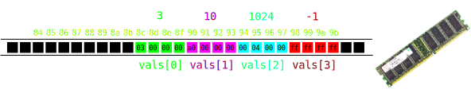

Slides week 3
Outline
The topics for this week are arrays and strings. These are essential foundational concepts that you will need to get your heads around to be able to program in C. Please take the time to ensure that you understand them.
Lists in Python
Arrays in C are analogous to lists in Python. So let’s demonstrate some properties of lists:
Arrays in C
In C an array collects together similar objects. However in C arrays are homogeneous. That means that each object in the array must be of the same type (e.g. int or double etc).
Also an array in C cannot be resized. Its size is specified when it is created and can not be changed later.
Array example
/* array.c */
#include <stdio.h>
int main(int argc, char *argv[])
{
/* Declare and initialise array */
int numbers[4] = {3, 10, 1024, -1};
for(int i=0; i<4; i++)
{
printf("numbers[%d] = %d\n", i, numbers[i]);
}
return 0;
}Compile and run:
$ make
gcc -std=c99 -Wall array.c -o array.exe
$ ./array.exe
numbers[0] = 3
numbers[1] = 10
numbers[2] = 1024
numbers[3] = -1Computer memory
Breakdown of memory/CPU usage on a Windows computer (push Ctrl-Shift Escape) so see this):

Computer memory
Representation of memory as a line of byte slots. If your computer has 8GiB of memory then there will be \(8\times 1024^3\) byte slots each of which can store one byte.
Bytes are organised into kernel and processes in memory. Bytes are organised into files in persistent storage (e.g. the hard drive).

Process memory
Breakdown of memory within a process:

The executable machine code goes at the beginning. The constant data goes right after. The stack stores the variables for each function that is currently executing. The stack grows and shrinks at the end of the process’ memory space. If you call too many functions the stack will fill the unused space (stack overflow).
Array in memory
The organisation of an array in memory:

/* Declare and initialise array */
int vals[4] = {3, 10, 1024, -1};
for(int i=0; i<4; i++)
{
printf("vals[%d] = %d\n", i, vals[i]);
}Arrays as memory blocks
The compiler always needs to know the size (number of bytes) of any data type.
For example an array of type int[N] uses N*sizeof(int) bytes (i.e. N*4 bytes).
An array uses a contiguous block of memory.
Resizing arrays
You can’t resize arrays: the size must be fixed in the declaration.
If you don’t know how many things you want to put in the array consider whether there is a maximum possible number of things to put in. Then you can just make your array that size and not necessarily use all of it.
Strange things happen if you go over the end of your array…
Out of bounds access
Let’s deliberately print out values from beyond the end of the array
int vals[] = {10, 11, 12}; // implicitly size 3
for(int i=0; i<10; i++) // Loops to 10th element
{
printf("vals[%d] = %d\n", i, vals[i]);
}Compile and run to see gibberish:
vals[0] = 10
vals[1] = 11
vals[2] = 12
vals[3] = 3 <--- i
vals[4] = 0 <--- other stuff
vals[5] = 0
vals[6] = 675862381
vals[7] = 32655
vals[8] = 0
vals[9] = 0Out of bounds access
In this example we see that i happens to be stored immediately after the array (that’s not guaranteed to happen though):

vals[0] = 10
vals[1] = 11
vals[2] = 12
vals[3] = 3 <--- i
vals[4] = 0 <--- other stuff
vals[5] = 0
vals[6] = 675862381
vals[7] = 32655
vals[8] = 0
vals[9] = 0Array indices
If a is an array of size N e.g. int a[N] then valid indices are 0, 1, 2, …, N-1.
Negative indices are always invalid.
The compiler cannot check that you are using valid indices: you need to do it.
Common source of beginner problems.
Comparing arrays
int numbers1[4] = {3, 4, 5, 6};
int numbers2[4] = {3, 4, 5, 6};
if(numbers1 == numbers2)
{
puts("numbers1 and numbers2 are equal.");
}
else
{
puts("numbers1 and numbers2 are NOT equal!");
}Compile and run:
$ make
gcc -std=c99 -Wall compare.c -o compare.exe
$ ./compare.exe
numbers1 and numbers2 are NOT equal!What went wrong?
Array equality
Comparing arrays with == doesn’t work.
An array is only ever “equal” to itself when compared this way.
You probably want to check that both arrays have equal elements.
Compare array elements
The code to compare the elements of two arrays:
int numbers1[4] = {3, 4, 5, 6};
int numbers2[4] = {3, 4, 5, 6};
int equal = 1;
for(int i=0; i<4; i++)
{
if(numbers1[i] != numbers2[i])
{
equal = 0;
break;
}
}Compile and run:
$ make
gcc -std=c99 -Wall compare2.c -o compare2.exe
$ ./compare2.exe
numbers1 and numbers2 are equal.Strings in C.
In C a string is just an array of type
char.charis short for characterBut
charis an integer type…
ASCII code

Hello world in ASCII
ASCII codes represent the standard (English) character set with integers:
'H'(72), 'e'(101), 'l'(108), 'o'(111), ' '(20), … 'W'(87), 'r'(114), 'd'(100), '!'(21), '\n'(10), …
Can use these in Python:
Making a string as a list of characters:
>>> nums = [ord(c) for c in "Hello World!\n"]
>>> nums
[72, 101, 108, 108, 111, 32, 87, 111, 114, 108, 100, 33, 10]
>>> chars = [chr(n) for n in nums]
>>> chars
['H', 'e', 'l', 'l', 'o', ' ', 'W', 'o', 'r', 'l', 'd', '!', '\n']Hello world in ASCII
Let’s do the same in C:
/* asciihello.c */
#include <stdio.h>
int main(int argc, char *argv[])
{
char message[] = {
72, 101, 108, 108, 111, /* "Hello" */
32, /* " " */
87, 111, 114, 108, 100, 33, /* "World" */
10, /* "!" */
0 /* "\0" */
};
puts(message);
return 0;
}Compile and run:
Initialising strings
These are equivalent:
char message1[] = {72, 101, 108, 108, 111, 32,
87, 111, 114, 108, 100, 33, 10, 0};
char message2[] = {'H', 'e', 'l', 'l', 'o', ' ',
'W', 'o', 'r', 'l', 'd', '!', '\n', '\0'};
char message3[] = "Hello World!\n";'H' is an integer expression equivalent to 72 or 0x48. 'H' is easier to understand though: readability counts!
Strings in C
- A string is a null-terminated
chararray.
char message[] = "Hello World!\n";
int i = 0;
while(message[i] != '\0') /* Check for null zero */
{
i++;
}
printf("\"%s\" has %d characters...\n", message, i);
printf("Plus one null-byte.\n");Compile and run:
$ make
gcc -std=c99 -Wall string_length.c -o string_length.exe
$ ./string_length.exe
"Hello World!
" has 13 characters...
Plus one null-byte.The <string.h> header
/* strlen.c */
#include <stdio.h>
#include <string.h> /* String functions */
int main(int argc, char *argv[])
{
char string[] = "A moderately long string";
int length = strlen(string);
printf("Length: %d\n", length);
return 0;
}Compile and run:
$ make
gcc -std=c99 -Wall strlen.c -o strlen.exe
$ ./strlen.exe
Length: 24Comparing strings.
char string1[] = "foo";
char string2[] = "bar";
if(!strcmp(string1, string2))
{
printf("string1 and string2 are the same\n");
}
else
{
printf("string1 and string2 are different\n");
}$ make
gcc -std=c99 -Wall strcmp.c -o strcmp.exe
$ ./strcmp.exe
string1 and string2 are differentstrcmp returns 0 (false) if the strings are equal and non-zero otherwise!
Parsing decimal strings
Very useful:
char string[] = "123";
int a;
if(!sscanf(string, "%d", &a))
{
fprintf(stderr, "Could not parse the string...");
return 1; // Indicate error somehow...
}
printf("a = %d 2 * a = %d\n", a, 2 * a);Compile and run:
$ make
gcc -std=c99 -Wall parse.c -o parse.exe
$ ./parse.exe
a = 123 2 * a = 246Parsing command line arguments
How to use numbers given as command line arguments:
/* argparse.c */
#include <stdio.h>
int main(int argc, char *argv[])
{
/* Parse the command line */
int num;
if(argc != 2 || !sscanf(argv[1], "%d", &num))
{
fprintf(stderr, "Please give a valid number\n");
return 1;
}
printf("You entered %d and %d^2 = %d\n", num, num, num*num);
return 0;
}Compile and run:
$ make
gcc -std=c99 -Wall argparse.c -o argparse.exe
$ ./argparse.exe
Please give a valid number
$ ./argparse.exe 12
You entered 12 and 12^2 = 144